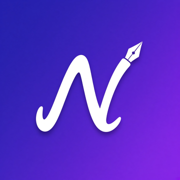

NotoraTerms of Use
Last updated: October 15, 2026 · Türkçe
Agreement
By downloading or using Notora you agree to these Terms of Use. If you do not agree, please do not use the app. The Apple Standard End User License Agreement also applies.
The App
Notora is provided free of charge, without ads or in-app purchases. We grant you a personal, non-exclusive, non-transferable license to use the app on Apple devices you own or control.
Your Content
You own everything you create in Notora. You are responsible for the content you create, import or share, and for making sure you have the right to use any documents or images you import.
Backups
Notora stores notes on your device or in your iCloud Drive. While we work hard to keep your data safe, we recommend exporting backups regularly (Account & Settings → Backup & Data). We are not liable for data loss caused by device failure, iCloud issues, deletion or other events.
Acceptable Use
Do not use Notora for unlawful purposes, and do not attempt to reverse engineer, modify or redistribute the app except as permitted by law.
Disclaimer
Notora is provided "as is" without warranties of any kind, to the extent permitted by law. We do not guarantee that the app will be error-free or available at all times.
Limitation of Liability
To the maximum extent permitted by law, the developer is not liable for any indirect, incidental or consequential damages arising from the use of the app.
Changes
We may update the app and these terms. Continued use after changes means you accept the updated terms.
Contact
Questions? Write to notora.app.support@gmail.com.
Kullanım Koşulları
Son güncelleme: 15 Ekim 2026
Sözleşme
Notora'yı indirerek veya kullanarak bu Kullanım Koşulları'nı kabul etmiş olursunuz. Kabul etmiyorsanız lütfen uygulamayı kullanmayın. Apple Standart Son Kullanıcı Lisans Sözleşmesi de geçerlidir.
Uygulama
Notora reklamsız ve uygulama içi satın alma olmadan ücretsiz sunulur. Size, sahip olduğunuz veya kontrol ettiğiniz Apple cihazlarında uygulamayı kullanmanız için kişisel, münhasır olmayan ve devredilemez bir lisans veriyoruz.
İçeriğiniz
Notora'da oluşturduğunuz her şey size aittir. Oluşturduğunuz, içe aktardığınız veya paylaştığınız içerikten ve içe aktardığınız belge ve görselleri kullanma hakkına sahip olmaktan siz sorumlusunuz.
Yedekler
Notora notları cihazınızda veya iCloud Drive'ınızda saklar. Verilerinizi korumak için özen göstersek de düzenli olarak yedek almanızı öneririz (Hesap ve Ayarlar → Yedekleme ve Veriler). Cihaz arızası, iCloud sorunları, silme veya benzeri olaylardan kaynaklanan veri kayıplarından sorumlu değiliz.
Kabul Edilebilir Kullanım
Notora'yı yasa dışı amaçlarla kullanmayın; yasaların izin verdiği durumlar dışında uygulamayı tersine mühendislikle çözmeye, değiştirmeye veya yeniden dağıtmaya çalışmayın.
Sorumluluk Reddi
Notora, yasaların izin verdiği ölçüde hiçbir garanti verilmeksizin "olduğu gibi" sunulur. Uygulamanın hatasız veya her zaman erişilebilir olacağını garanti etmiyoruz.
Sorumluluğun Sınırlandırılması
Yasaların izin verdiği azami ölçüde geliştirici, uygulamanın kullanımından doğan dolaylı, arızi veya sonuç olarak ortaya çıkan zararlardan sorumlu değildir.
Değişiklikler
Uygulamayı ve bu koşulları güncelleyebiliriz. Değişikliklerden sonra kullanmaya devam etmeniz güncel koşulları kabul ettiğiniz anlamına gelir.
İletişim
Sorularınız için notora.app.support@gmail.com adresine yazabilirsiniz.